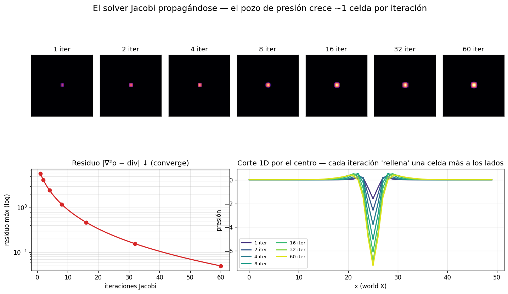

La operación que parecía una caja negra: medir la divergencia,
resolver ∇²p = div con Jacobi y restar el gradiente de presión. Aquí se ve
iteración a iteración qué hace el solver y, al final, para
qué sirve.
Cómo leer esta página. Vamos de lo pequeño a lo grande:
(1) qué es la divergencia, (2) qué hace la proyección,
(3) cómo trabaja el solver Jacobi por dentro, y (4) para qué
sirve todo esto en el fuego. Cada figura se genera con la función real
del motor (engine/presion.h), sin reimplementar nada.
1 · El problema: el campo no es incompresible
Un fluido incompresible cumple una regla simple: en cada celda, lo
que entra de fluido tiene que salir. Ni se acumula ni desaparece. La
medida de cuánto se incumple esa regla es la divergencia:
div = (vxder − vxizq)
+ (vyarr − vyabj)
+ (vzfrente − vzatrás)
diferencia de velocidad entre vecinos opuestos, en cada eje
Tras aplicar la flotabilidad, el campo de
velocidad NO cumple la condición: el gas caliente añade empuje hacia arriba y
eso crea zonas donde el fluido "aparece" o "se escapa". Para verlo con los
ojos, montamos un campo idealizado con una fuente (sale
fluido) y un sumidero (entra fluido):
Las flechas son la velocidad; el color es la divergencia.
Rojo = la velocidad apunta hacia afuera → el fluido se escapa
(div > 0). Azul = apunta hacia adentro → se acumula
(div < 0). Donde el flujo es paralelo, la divergencia es cero.
Qué demuestra
La divergencia es un número por celda que dice cuánto fluido neto
entra o sale. Un campo incompresible la tiene a cero en todas partes.
El nuestro, tras la buoyancy, no — y por eso hay que corregirlo.
2 · La proyección: restar el gradiente de presión
¿Cómo se quita la divergencia sin destruir el flujo? Se introduce un campo de
presión cuyo gradiente, restado a la velocidad, cancela
justo la parte que sobra. Ese campo es la solución de la ecuación de Poisson
∇²p = div. Una vez resuelto:
v −= ∇p / 2
a cada celda se le resta el gradiente de presión → el fluido deja de acumularse
Aplicando el solver real del motor a aquel campo fuente+sumidero:
1 · Antes: el campo divergente (fuente roja, sumidero azul).
2 · Presión: la solución de ∇²p = div — alta donde el fluido se
acumula, baja donde se escapa. 3 · Después: tras restar ∇p, la
divergencia (misma escala de color) casi desaparece.
Qué demuestra
La presión actúa como un "moderador": empuja desde donde sobra fluido hacia
donde falta, hasta equilibrar las cuentas. Tras la corrección, la divergencia
cae ~61 %.
Matiz honesto (lo descubrió el propio lab). La divergencia
se reduce mucho pero no se anula del todo, y en el centro de cada foco
incluso cambia de signo. No es un bug: es la firma del desacople
par-impar de la rejilla collocated del motor, donde la
velocidad y la presión viven en el mismo punto. El gradiente central
(pder−pizq)/2 se salta la celda central, así que celdas
pares e impares quedan parcialmente desacopladas y el solver no puede limpiar
el último resto. Lo que sí converge limpiamente es el sistema
de Poisson — lo vemos justo abajo.
3 · El solver Jacobi, por dentro
La ecuación ∇²p = div no se resuelve de un tirón en 3D: se resuelve
iterando. El método de Jacobi es de una simplicidad
desarmante — cada iteración pone la presión de una celda como el promedio de
sus 6 vecinas, ajustado por la divergencia local:
pnueva = ( pder + pizq + parr +
pabj + pfrente + patrás − div ) / 6
se repite hasta que la presión deja de cambiar (converge)
Aquí está lo que nunca se ve en una fórmula. Colocamos una fuente compacta
(divergencia casi puntual en el centro) y capturamos la presión tras 1, 2, 4,
… iteraciones:

Arriba: el "pozo" de presión tras cada nº de iteraciones — empieza
en un punto y se va llenando hacia afuera. Abajo izquierda: el
residuo de Poisson cayendo (converge). Abajo derecha: un corte por el
centro: cada iteración hace la "tienda" un poco más profunda y, sobre todo,
una celda más ancha.
El mismo proceso, animado: el pozo de presión formándose barrido
a barrido.
Qué demuestra
La clave para entender Jacobi:
Como cada celda solo mira a sus vecinos inmediatos, la
información de la divergencia viaja una celda por iteración.
Por eso el pozo "crece" hacia afuera y por eso hace falta repetir muchas
veces: para que la señal llegue de un extremo al otro de la fuente.
El residuo baja de forma monótona → el método converge.
En el motor se corta en 30 iteraciones (o antes, si ya casi no cambia).
Actualizar cada celda solo con valores de la iteración anterior
hace a Jacobi trivialmente paralelizable — todas las
celdas a la vez, sin dependencias. Es la razón de elegirlo.
4 · ¿Para qué sirve? El empuje que transporta el calor
Hasta aquí, "limpiar la divergencia" suena abstracto. Esta es la razón de
fondo: el gradiente de presión que genera el gas caliente al ascender
empuja lateralmente el fluido vecino, y ese empuje es el que
lleva el calor hacia el combustible aún sin arder. Para verlo, comparamos dos
mundos idénticos con un foco caliente sostenido en la base — uno con presión y
otro sin ella:
Corte vertical. Arriba (sin presión): solo buoyancy + advección — el
calor se queda pegado al foco. Abajo (con presión): el orden real del
motor (buoyancy → presión → advección) — el gradiente de presión genera una
circulación (flechas) que reparte el calor a los lados, ~8× más ancho.
Los dos mundos evolucionando: sin presión el calor no se mueve;
con presión se abre en champiñón hacia el combustible.
Qué demuestra
La presión no es un trámite matemático: es el mecanismo de transporte
lateral. La buoyancy sola da empuje vertical aislado; es la
incompresibilidad (la presión) la que lo convierte en una circulación
coherente que mueve el calor hacia donde hay combustible. Es la frase del TFG,
hecha visible.
Bonus honesto. Si dejas correr este experimento aislado más
allá de ~8 ticks, se desestabiliza (ruido de tablero de ajedrez): un foco
fuerte sostenido sin enfriamiento ni reacción hace que la buoyancy acumule
velocidad y crezca el modo collocated de antes. Eso es justo lo que el
producto evita con el modo superficie + enfriamiento ambiente. El
experimento se detiene en el champiñón ya formado, que es lo que importa.
→ Sigue con la tercera operación del paso de fluido:
la advección, que es la que de
verdad mueve el calor por ese campo de velocidad ya corregido.